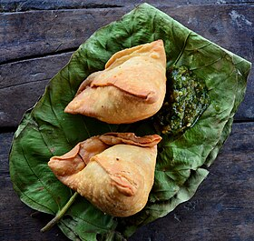

How To Make Samosa
Home

Description
A beloved Indian snack, the samosa is a deep-fried, golden-brown pastry filled with a spiced mixture of potatoes, peas, and sometimes lentils or meat. The crispy outer layer perfectly complements the savory filling, making it a favorite street food. Often served with tamarind or mint chutney, samosas are enjoyed across India with tea or as a standalone treat.
Ingredients
- All-purpose flour (maida)
- Potatoes
- Green peas
- Spices (cumin, garam masala, amchur, chili powder)
- Oil
Steps
- Make the dough : Mix flour, salt, and oil/ghee in a bowl. Add water gradually and knead into a firm dough. Let it rest for 30 minutes.
- Make the filling: Heat oil in a pan, add cumin seeds, green chilies, and ginger. Add mashed potatoes, peas, and spices. Mix well and cook for 2 minutes. Let it cool.
- Shape the samosas: Divide the dough into small balls, roll each into a thin oval, and cut in half. Form a cone with each half and fill with the potato mixture. Seal the edges with water.
- Fry: Heat oil in a pan and deep-fry samosas on low-medium heat until golden brown and crispy.
- Serve:Enjoy with tamarind or mint chutney.